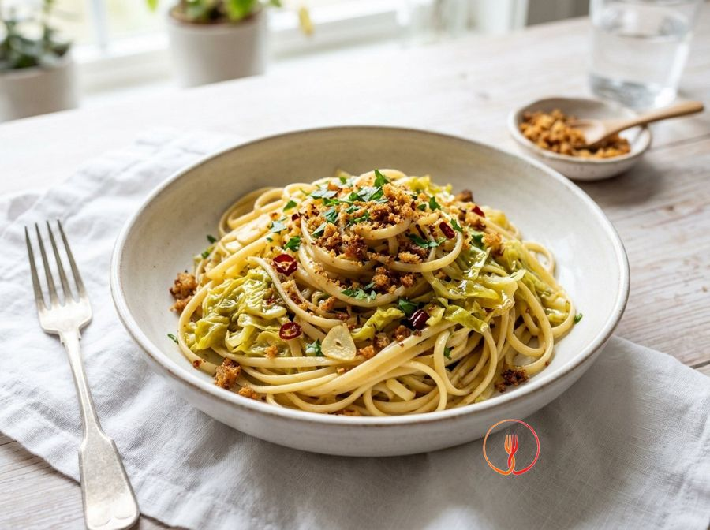
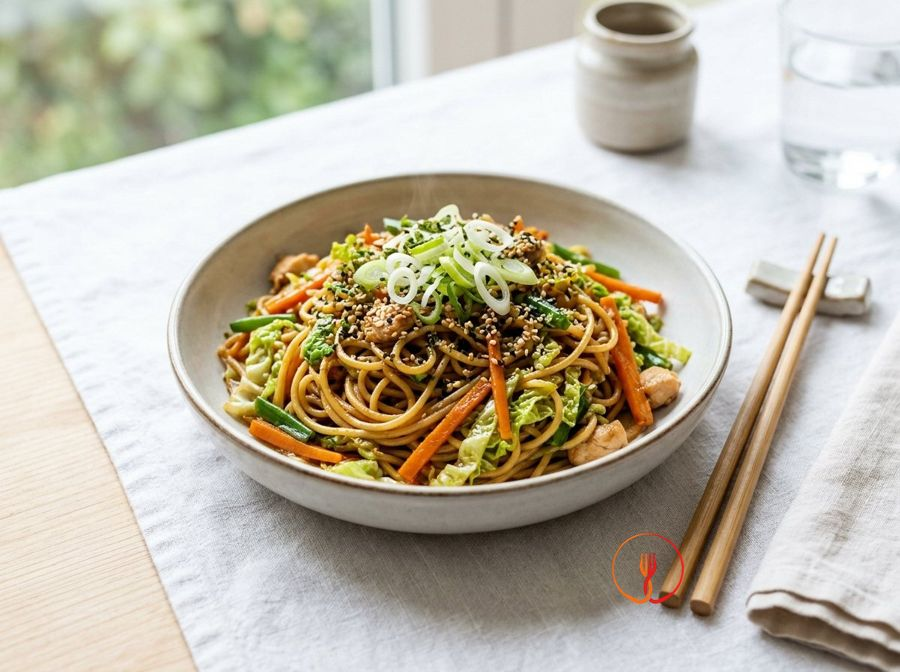

Risotto mantecato alla crema di verza e zafferano
Un primo piatto raffinato dove la verza viene trasformata in una crema vellutata che avvolge il riso, con una nota cromatica data dallo zafferano.
Ingredienti
- Riso Carnaroli320 g
- Verza500 g
- Zafferano in pistilli o polvere1 bustina
- Scalogno1
- Brodo vegetale1.2 l
- Burro freddo30 g
- Parmigiano Reggiano grattugiato50 g
- Vino bianco secco50 ml
- Olio extravergine di olivaq.b.
Allergeni
Latte
Può contenere tracce di: Sedano.
Procedimento
- Inizia pulendo 500 g di verza: elimina le coste centrali più coriacee e taglia le foglie a listarelle irregolari. Tuffale in una pentola con acqua bollente leggermente salata e lasciale cuocere a fuoco vivace per circa 6-7 minuti. Le foglie dovranno risultare tenere alla forchetta ma conservare un colore verde brillante. Il mio consiglio: non gettare l'acqua di cottura, puoi unirla al brodo vegetale per intensificare il sapore del piatto.
- Scola la verza e immergila immediatamente in una ciotola con acqua e ghiaccio per fermare la cottura e fissare la clorofilla. Una volta fredda, strizzala leggermente e mettila in un frullatore con un filo d'olio extravergine e un mestolo di brodo caldo. Frulla alla massima potenza fino a ottenere una crema liscissima, densa e dal colore smeraldo. Un trucco da chef: se la crema presenta ancora dei residui fibrosi, passala attraverso un colino a maglie fini.
- Prepara la base tritando finemente uno scalogno e mettendolo in una casseruola ampia con un giro d'olio extravergine. Lascialo appassire a fuoco bassissimo per circa 5 minuti, aggiungendo un cucchiaio di brodo se vedi che inizia a scurirsi troppo. Lo scalogno deve diventare trasparente e quasi sciogliersi, sprigionando un profumo dolce e delicato senza mai bruciare. Attenzione: la pazienza in questa fase garantisce una base aromatica perfetta che non coprirà il gusto del riso.
- Alza la fiamma a intensità media e versa nella casseruola 320 g di riso Carnaroli per la fase della tostatura. Mescola continuamente con un cucchiaio di legno per circa 2 minuti finché i chicchi non diventano traslucidi sui bordi e caldi al tatto. Sentirai un profumo di nocciola tostata e vedrai il riso 'brillare' grazie alla sottile pellicola di grasso che lo ricopre. Il mio consiglio: tosta il riso finché non scotta se provi a prenderne un chicco tra le dita, è il segnale che i pori sono chiusi.
- Versa 50 ml di vino bianco secco a temperatura ambiente e lascia che sfumi a fiamma vivace. Continua a mescolare finché non avrai più sentore di alcol nel vapore che sale dalla pentola e il liquido sarà stato completamente assorbito dal riso. Questa operazione sgrassa il palato e dona una nota acida fondamentale per l'equilibrio del risotto. Non usare mai vino freddo da frigorifero, poiché causerebbe uno shock termico al chicco rompendone la struttura.
- Inizia ad aggiungere i 1.2 l di brodo vegetale bollente, un mestolo alla volta, coprendo appena il riso. Mantieni una fiamma media in modo che il bollore sia costante ma non violento, mescolando regolarmente per favorire la fuoriuscita dell'amido. Aspetta che il liquido sia stato quasi del tutto assorbito prima di aggiungerne altro, mantenendo il riso sempre 'all'onda'. Ricorda: il riso non deve mai smettere di bollire, altrimenti perderà la sua consistenza ottimale.
- A metà cottura, dopo circa 8-9 minuti, incorpora la crema di verza preparata in precedenza e lo zafferano sciolto in un dito di brodo caldo. Mescola bene per distribuire uniformemente il colore dorato e il verde della verza, creando una sfumatura cromatica elegante e invitante. Continua la cottura aggiungendo brodo solo se necessario, portando il riso a una consistenza al dente. Il consiglio dello chef: aggiungi lo zafferano solo verso la fine per preservarne intatti il profumo e le proprietà organolettiche.
- Spegni il fuoco quando il riso è cotto ma ancora sodo e aggiungi 30 g di burro freddissimo di frigorifero e 50 g di Parmigiano Reggiano. Manteca energicamente muovendo la casseruola con un movimento rotatorio e mescolando con forza per incorporare aria e creare un'emulsione perfetta tra grassi e amidi. Otterrai una consistenza cremosa e fluida, il famoso effetto 'all'onda'. Fondamentale: il burro deve essere gelido per creare lo shock termico necessario a ottenere una cremosità superiore.
- Copri la casseruola con un canovaccio pulito e lascia riposare il risotto per un minuto prima di servirlo. Questo breve passaggio permette ai sapori di stabilizzarsi e alla temperatura di distribuirsi uniformemente in tutto il chicco. Servi il risotto su piatti piani, battendo leggermente il fondo con il palmo della mano per stenderlo in modo omogeneo. Il tocco finale: decora con qualche pistillo di zafferano o una macinata di pepe nero fresco per un contrasto aromatico aggiuntivo.
Valori nutrizionali (stima)
| Per porzione (325 g) | Per 100 g | |
|---|---|---|
| Energia | 1946 kJ / 465 kcal | 598 kJ / 143 kcal |
| Proteine | 11 g | 3.5 g |
| Carboidrati | 68 g | 21 g |
| di cui zuccheri | 2.1 g | 0.6 g |
| Grassi | 14 g | 4.1 g |
| di cui saturi | 6.9 g | 2.1 g |
| Fibre | 3.2 g | 1.0 g |
| Sale | 1.2 g | 0.4 g |
Valori stimati con l'AI su dati medi CREA / USDA: sono indicativi e non sostituiscono il parere di un medico o di un nutrizionista.
Apri la ricetta nell'app per la lista della spesa, le schede ingredienti e i negozi vicini.
Ricette correlate

30 minLinguine alla Verza e Mollica Tostata💰 Salva Euro · circa 0,56 € a persona
25 minYakisoba di Spaghetti e Verza croccante💰 Salva Euro · circa 1,38 € a persona 40 minCotolette di verza arrostite alla senape antica🌿 Ricetta di stagione
40 minCotolette di verza arrostite alla senape antica🌿 Ricetta di stagione 55 minStufato di Verza e Mele al Cumino💰 Salva Euro · circa 0,82 € a persona
55 minStufato di Verza e Mele al Cumino💰 Salva Euro · circa 0,82 € a persona